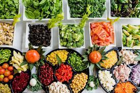

A simple app for ordering food
This is a simple static but responsive page built with HTML, CSS and JavaScript and hosted on netlify

The design for this site was shared to me by one of my mentors. It was meant to test my skills on responsive web design
The entire code was written by me, including the responsive page. I had a bit of challenge integrating portrait view when I started working on the responsiveness of the page. All the challenges I encountered actually contributed to my growth as I understood better to always build along with responsiveness instead of making it a add on to the main page.